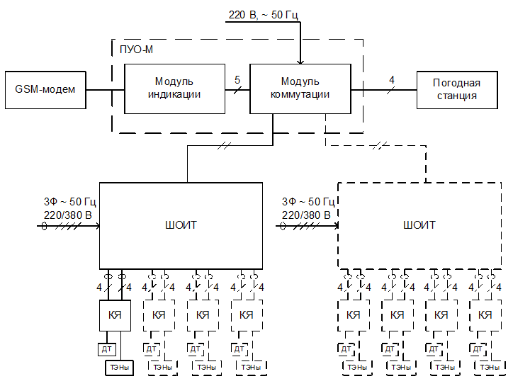
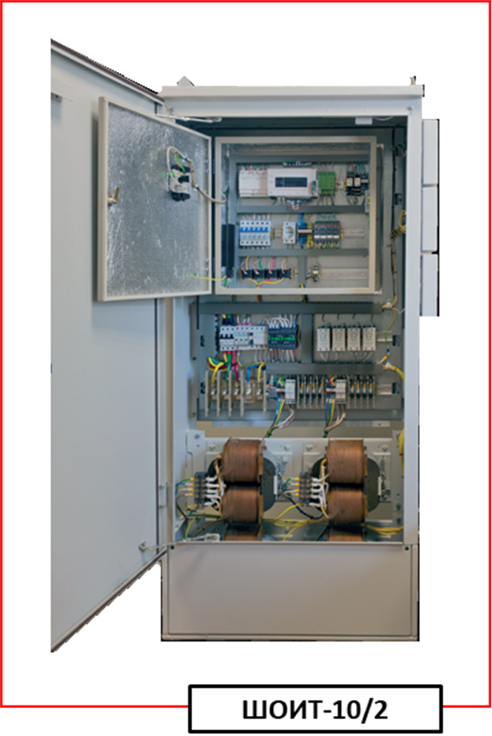
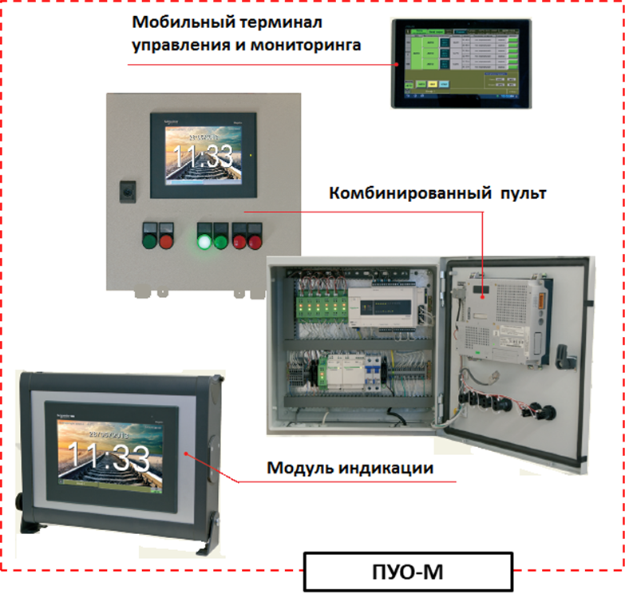

СЭИТ-04
Система управления электрообогревом стрелок СЭИТ-04М
Назначение
Система управления электрообогревом (далее - СЭИТ-04М) предназначена для управления электрообогревом и освещением стрелок на станциях, парках и горках. Система обеспечивает эффективное предотвращение обледенения и удаление наледи и снега в зоне железнодорожных стрелочных переводов в зимнее время, что гарантирует бесперебойное движение поездов.
Основной особенностью СЭИТ-04М является то, что для электропитания групп ТЭНов установленных на левый и правый рамные рельсы используется отдельный изолирующий трансформатор мощностью 5 кВт (2 трансформатора на стрелку). Так же система адаптирована под применение усиленных раскладок ТЭНов (проекты : 17833-00-00, 17806-00-00, 17807-00-00, 17811-00-00, 17814-00-00) разработанных ГТСС с учетом Российских климатических условий и требующих от 16,5 кВт до 32 кВт мощности на один стрелочный перевод.
Состав системы
Система СЭИТ-04М состоит из:
- пульта управления обогревом ПУО-М (состоящего из модуля индикации и модуля коммутации или SCADA-системы, состоящей из с OPС- сервера, сервера хранения информации и рабочих мест);
- GSM- модема (опционально), обеспечивающего sms-оповещение в случае аварий и удаленный мониторинг;
- шкафов ШОИТ для управления электрообогревом стрелок;
- клеммных ящиков, предназначенных для подключения ТЭНов;
- погодной станции
- датчиков температуры рельса (по одному на каждый стрелочный перевод);
- ТЭНов;
- экранов раммного рельса и крепежной арматуры. 
В состав шкафа ШОИТ входят:
- корпус ШОИТ. Поставляется в двух размерных исполнениях — «большой», на базе которого производится ШОИТ 10/3 и 10/4, и «малый», используется для производства ШОИТ 10/1 и 10/2;
- панель ручного управления. Используется для местного управления режимами работы обогрева и освещения стрелочных переводов, а так же для индикации режимов работы и аварийных ситуаций;
- панель ручного инструмента. Предназначена для подключения трехфазного ручного электроинструмента мощностью не более 3,5 кВт, использующего схему питания «треугольник»;
- изолирующие трансформаторы. Предназначены для гальванической развязки цепей питания ТЭН-ов и первичных фазных цепей питания ШОИТ;
- датчик вскрытия ШОИТ. Используется для сигнализации вскрытия дверей ШОИТ на ПУО-М, пульте ДСП и пульте ДНЦ;
- датчик температуры окружающего воздуха. Измеряет температуру окружающего воздуха вблизи ШОИТ;
- монтажная панель с термокожухом (МП). На монтажной панели расположены основные узлы коммутирующего оборудования, приборы диагностики каналов обогрева и блок управления. Часть этих блоков, чувствительная к низким температурам окружающей среды размещена внутри термокожуха, который поддерживает нормальный температурный режим. 
Пульт ПУО-М состоит из следующих блоков:
- погодной станции. Поставляется в комплекте с ПУО-М. Погодная станция оснащена датчиками температуры окружающего воздуха, скорости ветра, освещенности и осадков. Служит для обеспечения автоматического режима работы обогрева и освещения стрелочных переводов. Погодная станция устанавливается на улице вблизи помещения, в котором размещен модуль коммутации ПУО (на мачте или на стене здания)
- модуля индикации. Представляет собой сенсорный жидкокристаллический экран, на котором отображается информация о состоянии электрообогрева и освещения стрелочных переводов, диагностическая информация со всех подключенных ШОИТ. При помощи модуля индикации оператор может редактировать конфигурационные параметры ШОИТ и подавать команды управления режимами работы обогрева и освещения стрелочных переводов. Модуль индикации устанавливается в помещении дежурного по станции (аппаратной ДСП). Решения по размещению, электропитанию определяются при проектировании.
- модуля коммутации. Связывает между собой погодную станцию, модуль индикации, шкафы ШОИТ и дополнительно подключаемые пульты ДСП и ДНЦ. Модуль коммутации располагается в здании поста ЭЦ в соответствии с актами выбора размещения, утвержденными заказчиком.
- GSM - модема (опционально). Предназначен для организации удаленного мониторинга и SMS- оповещения об аварийных ситуациях. 
Пульт ПУО-М может так же построен на основе SCADA-системы.
В таком исполнении система управления обогревом состоит из :
- модуля коммутации, обеспечивающего обмен данными со шкафами управления ШОИТ;
- модуля управления, обеспечивающего:
- управление обогревом на станции;
- выдачу аварийных сообщений;
- интерфейс к дежурному по станции;
- интерфейс к погодной станции (управление обогревом с учетом осадков, температуры окружающего воздуха);
- выдачу аварийных SMS- сообщений (через GSM- модем);
- интерфейс к системе управления верхнего уровня.
- пульта управления, обеспечивающего непосредственно мониторинг и управление в пределах станции;
- сервера БД, обеспечивающего:
- разграничение прав доступа к статистике, мониторингу и управлению;
- хранение статистики;
- хранение информации об авариях.
- WEB-сервера (может быть объединен с сервером БД), обеспечивающего удаленный мониторинг, управление посредством WEB- интерфейса.
- интерфейса к АРМ, обеспечивающего требуемый физический и логический интерфейс к АРМ различных служб.
Технические характеристики :
- Электропитание шкафа ШОИТ осуществляется от трехфазной электрической сети с глухозаземленной нейтралью с номинальными значениями напряжения (230/400) В, частотой 50 Гц. Допустимые отклонения напряжения от номинального значения: ± 10 %.
- Сопротивление заземлителя и заземляющего провода не более 4 Ом.
- Мощность потребления шкафа ШОИТ без нагрузки, с отключенными изолирующими трансформаторами и ручным инструментом, не более 120 ВА.
- При использовании функции транзита питания, максимальная потребляемая мощность сети ШОИТ складывается из мощности транзитного и оконечного ШОИТ. Транзитным способом допускается подключать не более одного ШОИТ.
- Максимальная мощность канала обогрева – 5000 ВА.
- Максимальная мощность канала освещения – 500 ВА.
- Снижение мощности подключенных нагревательных элементов, при котором происходит индикация аварии нагревательных элементов – не менее 25 % от установленной мощности.
- Время нечувствительности:
- аварии снижение мощности обогрева – 10с±20 %.
- аварии напряжения питающего ввода – 10 с ± 20 %.
- аварии «Дефект сопротивления изоляции» – 0,2 с ± 20 %.
- Время реакции на команду с пульта ПУО-М – 1 с ± 20 %.
- Габаритные размеры, мм, не более:
- большого шкафа ШОИТ без фундамента – 1490×460×1790;
- малого шкафа ШОИТ без фундамента – 890×460×1790;
- фундамента большого шкафа ШОИТ – 1430×385×800;
- фундамента малого шкафа ШОИТ – 830×385×800;
- КЯ с опорой – 335×450×570.
- Максимальное сечение кабелей:
- вводной кабель питания шкафа ШОИТ: 95 мм2;
- кабель питания ТЭНов: 35 мм2;
- сигнальный кабель датчиков температуры рельса: 2,5 мм2;
- кабель подключения освещения стрелочного перевода: 6 мм2.
- электропитание пульта ПУО-M осуществляется от однофазной электрической сети с номинальным значением напряжения 220 В, частотой 50 Гц ± 2 Гц. Допустимые отклонения напряжения: ± 10 %.
- Мощность потребления пульта ПУО-M: не более 100 ВА.
- Длина линии связи пульта ПУО-М со шкафом ШОИТ при сечении жилы 0,9 мм2: до 2 км.
- Максимальное сечение кабеля «шкаф ШОИТ – пульт ПУО-М»: 1,2 мм2.
- Габаритные размеры ПУО-М:
- модуль индикации: 330×675×95;
- модуль коммутации: 400×400×200.
Условия эксплуатации
Шкаф ШОИТ и КЯ рассчитаны на работу при температуре окружающего воздуха от минус 45 до +65 °С, относительной влажности воздуха не более 98 % при температуре +25 °С и высоте над уровнем моря не более 2000 м.
Пульт ПУО-М рассчитан на работу в условиях сухих помещений при температуре окружающего воздуха от 0 до +50 °С, относительной влажности воздуха не более 93 % при температуре +25 °С и высоте над уровнем моря не более 2000 м.